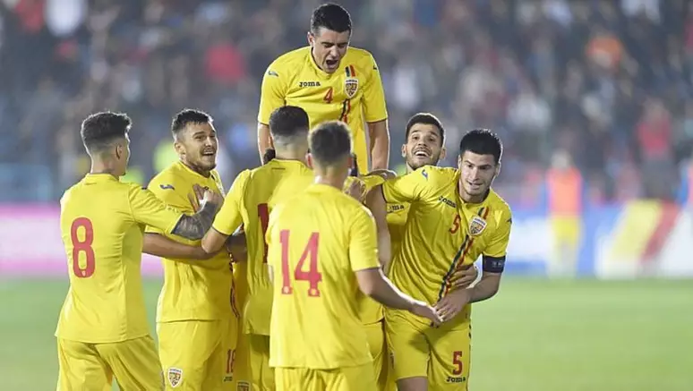

TÍTULOS
A Romênia nunca conquistou o título da Eurocopa. O melhor desempenho da seleção romena foi alcançar as quartas de final em duas ocasiões:
1. Em 2000, na Bélgica e na Holanda, onde foi eliminada pela Itália.
2. Em 2008, na Áustria e na Suíça, onde foi eliminada pela Holanda.
Portanto, a Romênia ainda não possui nenhum título na Eurocopa em sua história.